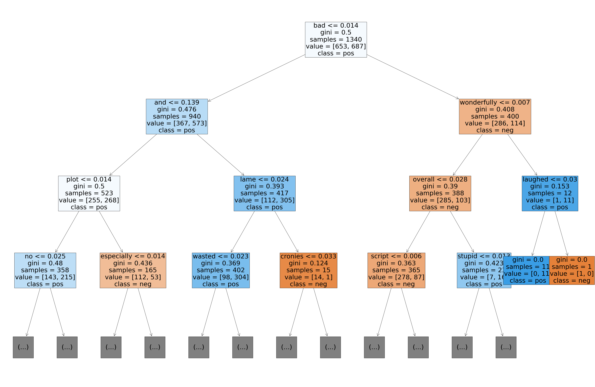

Machine Learning Using Sci-Kit Learn¶
import nltk, random
from nltk.corpus import movie_reviews
Data Loading¶
print(len(movie_reviews.fileids()))
print(movie_reviews.categories())
print(movie_reviews.words()[:100])
print(movie_reviews.fileids()[:10])
2000
['neg', 'pos']
['plot', ':', 'two', 'teen', 'couples', 'go', 'to', ...]
['neg/cv000_29416.txt', 'neg/cv001_19502.txt', 'neg/cv002_17424.txt', 'neg/cv003_12683.txt', 'neg/cv004_12641.txt', 'neg/cv005_29357.txt', 'neg/cv006_17022.txt', 'neg/cv007_4992.txt', 'neg/cv008_29326.txt', 'neg/cv009_29417.txt']
# category of the first 10 documents
[ c for c in [movie_reviews.categories(f) for f in movie_reviews.fileids()[:10]]]
[['neg'],
['neg'],
['neg'],
['neg'],
['neg'],
['neg'],
['neg'],
['neg'],
['neg'],
['neg']]
documents = [(list(movie_reviews.words(fileid)), category)
for category in movie_reviews.categories()
for fileid in movie_reviews.fileids(category)]
random.shuffle(documents)
print('Number of Reviews/Documents: {}'.format(len(documents)))
print('Sample Text of Doc 1:')
print('-'*30)
print(' '.join(documents[0][0][:50])) # first 50 words of the first document
Number of Reviews/Documents: 2000
Sample Text of Doc 1:
------------------------------
when a someone journeys to the theater to see a comedy , he always risks having to sit through inanity such as what we recently saw in films like edtv and office space . it really is too bad that comedies are so hit - and - miss , because
## Check Sentiment Distribution of the Current Dataset
from collections import Counter
sentiment_distr = Counter([label for (words, label) in documents])
print(sentiment_distr)
Counter({'pos': 1000, 'neg': 1000})
Train-Test Split¶
from sklearn.model_selection import train_test_split
train, test = train_test_split(documents, test_size = 0.33, random_state=42)
## Sentiment Distrubtion for Train and Test
print(Counter([label for (words, label) in train]))
print(Counter([label for (words, label) in test]))
Counter({'pos': 687, 'neg': 653})
Counter({'neg': 347, 'pos': 313})
X_train = [' '.join(words) for (words, label) in train]
X_test = [' '.join(words) for (words, label) in test]
y_train = [label for (words, label) in train]
y_test = [label for (words, label) in test]
Text Vectorization¶
from sklearn.feature_extraction.text import CountVectorizer, TfidfVectorizer
tfidf_vec = TfidfVectorizer()
X_train_bow = tfidf_vec.fit_transform(X_train) # fit train
X_test_bow = tfidf_vec.transform(X_test) # transform test
print(X_train_bow.shape)
print(X_test_bow.shape)
(1340, 33537)
(660, 33537)
Warning
Always split the data into train and test first before vectorizing the texts
Otherwise, you would leak information to the training process, which may lead to over-fitting
When vectorizing the texts,
fit_transform()the train andtransform()the test
Models¶
SVM¶
from sklearn import svm
model_svm = svm.SVC(C=8.0, kernel='linear')
model_svm.fit(X_train_bow, y_train)
SVC(C=8.0, break_ties=False, cache_size=200, class_weight=None, coef0=0.0,
decision_function_shape='ovr', degree=3, gamma='scale', kernel='linear',
max_iter=-1, probability=False, random_state=None, shrinking=True,
tol=0.001, verbose=False)
model_svm.predict(X_test_bow[:10])
#print(model_svm.score(test_text_bow, test_label))
array(['neg', 'pos', 'pos', 'pos', 'pos', 'neg', 'neg', 'neg', 'pos',
'neg'], dtype='<U3')
Decision Tree¶
from sklearn.tree import DecisionTreeClassifier
model_dec = DecisionTreeClassifier(max_depth=5, random_state=0)
model_dec.fit(X_train_bow, y_train)
model_dec.predict(X_test_bow[:10])
array(['neg', 'pos', 'neg', 'neg', 'neg', 'pos', 'pos', 'neg', 'pos',
'neg'], dtype='<U3')
Naive Bayes¶
from sklearn.naive_bayes import GaussianNB
model_gnb = GaussianNB()
model_gnb.fit(X_train_bow.toarray(), y_train)
model_gnb.predict(X_test_bow[:10].toarray())
array(['neg', 'pos', 'pos', 'neg', 'pos', 'pos', 'pos', 'neg', 'neg',
'pos'], dtype='<U3')
Logistic Regression¶
from sklearn.linear_model import LogisticRegression
model_lg = LogisticRegression()
model_lg.fit(X_train_bow, y_train)
model_lg.predict(X_test_bow[:10].toarray())
array(['neg', 'pos', 'pos', 'pos', 'pos', 'neg', 'neg', 'neg', 'pos',
'neg'], dtype='<U3')
Evaluation¶
#Mean Accuracy
print(model_svm.score(X_test_bow, y_test))
print(model_dec.score(X_test_bow, y_test))
print(model_gnb.score(X_test_bow.toarray(), y_test))
print(model_lg.score(X_test_bow, y_test))
0.8515151515151516
0.6348484848484849
0.6318181818181818
0.8106060606060606
# F1
from sklearn.metrics import f1_score
f1_score(y_test, model_svm.predict(X_test_bow),
average=None,
labels = movie_reviews.categories())
array([0.8320951 , 0.82534776])
## try a whole new self-created review:)
new_review =['This book looks soso like the content but the cover is weird',
'This book looks soso like the content and the cover is weird'
]
new_review_bow = tfidf_vec.transform(new_review)
model_svm.predict(new_review_bow)
array(['neg', 'neg'], dtype='<U3')
Tuning Model Hyperparameters - Grid Search¶
%%time
from sklearn.model_selection import GridSearchCV
parameters = {'kernel': ('linear', 'rbf'), 'C': (1,4,8,16,32)}
svc = svm.SVC()
clf = GridSearchCV(svc, parameters, cv=5)
clf.fit(X_train_bow, y_train)
CPU times: user 3min 9s, sys: 565 ms, total: 3min 9s
Wall time: 3min 12s
GridSearchCV(cv=5, error_score=nan,
estimator=SVC(C=1.0, break_ties=False, cache_size=200,
class_weight=None, coef0=0.0,
decision_function_shape='ovr', degree=3,
gamma='scale', kernel='rbf', max_iter=-1,
probability=False, random_state=None, shrinking=True,
tol=0.001, verbose=False),
iid='deprecated', n_jobs=None,
param_grid={'C': (1, 4, 8, 16, 32), 'kernel': ('linear', 'rbf')},
pre_dispatch='2*n_jobs', refit=True, return_train_score=False,
scoring=None, verbose=0)
sorted(clf.cv_results_.keys())
print(clf.best_params_)
{'C': 8, 'kernel': 'linear'}
print(clf.score(X_test_bow, y_test))
0.8515151515151516
Post-hoc Analysis¶
Some of the online code snippets try to implement the
show_most_informative_features()innltkclassifier.Here the codes only work with linear classifiers (e.g., Logistic models) in sklearn.
Need more updates. See this SO post
def show_most_informative_features(vectorizer, clf, n=20):
feature_names = vectorizer.get_feature_names()
coefs_with_fns = sorted(zip(clf.coef_[0], feature_names))
top = zip(coefs_with_fns[:n], coefs_with_fns[:-(n + 1):-1])
for (coef_1, fn_1), (coef_2, fn_2) in top:
print("\t%.4f\t%-15s\t\t%.4f\t%-15s" % (coef_1, fn_1, coef_2, fn_2))
show_most_informative_features(tfidf_vec, model_lg, n=20)
-2.2174 bad 2.4816 and
-1.3605 movie 1.7498 is
-1.2918 plot 1.2166 great
-1.2638 have 1.1359 his
-1.2452 worst 1.1203 as
-1.2410 to 1.1093 jackie
-1.1538 no 1.0518 war
-1.1220 script 1.0366 truman
-1.1205 there 0.9813 life
-1.0810 nothing 0.9014 the
-1.0585 this 0.8601 most
-1.0409 harry 0.8471 very
-1.0297 boring 0.8201 well
-0.9738 if 0.8120 also
-0.9602 only 0.7481 world
-0.9042 why 0.7375 many
-0.8502 stupid 0.7025 excellent
-0.8289 or 0.6798 will
-0.8056 any 0.6758 fiction
-0.8043 looks 0.6502 fun
For tree-based classifiers, visualization is better.
import sklearn
from sklearn.tree import plot_tree
text_representation = sklearn.tree.export_text(model_dec, feature_names = tfidf_vec.get_feature_names())
print(text_representation)
|--- bad <= 0.01
| |--- and <= 0.14
| | |--- plot <= 0.01
| | | |--- no <= 0.02
| | | | |--- poor <= 0.01
| | | | | |--- class: pos
| | | | |--- poor > 0.01
| | | | | |--- class: neg
| | | |--- no > 0.02
| | | | |--- to <= 0.14
| | | | | |--- class: neg
| | | | |--- to > 0.14
| | | | | |--- class: neg
| | |--- plot > 0.01
| | | |--- especially <= 0.01
| | | | |--- eventually <= 0.03
| | | | | |--- class: neg
| | | | |--- eventually > 0.03
| | | | | |--- class: pos
| | | |--- especially > 0.01
| | | | |--- attempt <= 0.02
| | | | | |--- class: pos
| | | | |--- attempt > 0.02
| | | | | |--- class: neg
| |--- and > 0.14
| | |--- lame <= 0.02
| | | |--- wasted <= 0.02
| | | | |--- either <= 0.03
| | | | | |--- class: pos
| | | | |--- either > 0.03
| | | | | |--- class: neg
| | | |--- wasted > 0.02
| | | | |--- torturous <= 0.02
| | | | | |--- class: neg
| | | | |--- torturous > 0.02
| | | | | |--- class: pos
| | |--- lame > 0.02
| | | |--- cronies <= 0.03
| | | | |--- class: neg
| | | |--- cronies > 0.03
| | | | |--- class: pos
|--- bad > 0.01
| |--- wonderfully <= 0.01
| | |--- overall <= 0.03
| | | |--- script <= 0.01
| | | | |--- true <= 0.02
| | | | | |--- class: neg
| | | | |--- true > 0.02
| | | | | |--- class: pos
| | | |--- script > 0.01
| | | | |--- matthew <= 0.03
| | | | | |--- class: neg
| | | | |--- matthew > 0.03
| | | | | |--- class: pos
| | |--- overall > 0.03
| | | |--- stupid <= 0.01
| | | | |--- attempts <= 0.01
| | | | | |--- class: pos
| | | | |--- attempts > 0.01
| | | | | |--- class: neg
| | | |--- stupid > 0.01
| | | | |--- class: neg
| |--- wonderfully > 0.01
| | |--- laughed <= 0.03
| | | |--- class: pos
| | |--- laughed > 0.03
| | | |--- class: neg
from matplotlib import pyplot as plt
fig = plt.figure(figsize=(60,40))
_ = sklearn.tree.plot_tree(model_dec, max_depth=3,
feature_names=tfidf_vec.get_feature_names(),
class_names=model_dec.classes_,
filled=True, fontsize=36)
#fig.savefig("decistion_tree.png")

Saving Model¶
# import pickle
# with open('../ml-sent-svm.pkl', 'wb') as f:
# pickle.dump(clf, f)
# with open('../ml-sent-svm.pkl' 'rb') as f:
# loaded_svm = pickle.load(f)
References¶
Geron (2019), Ch 2 and 3